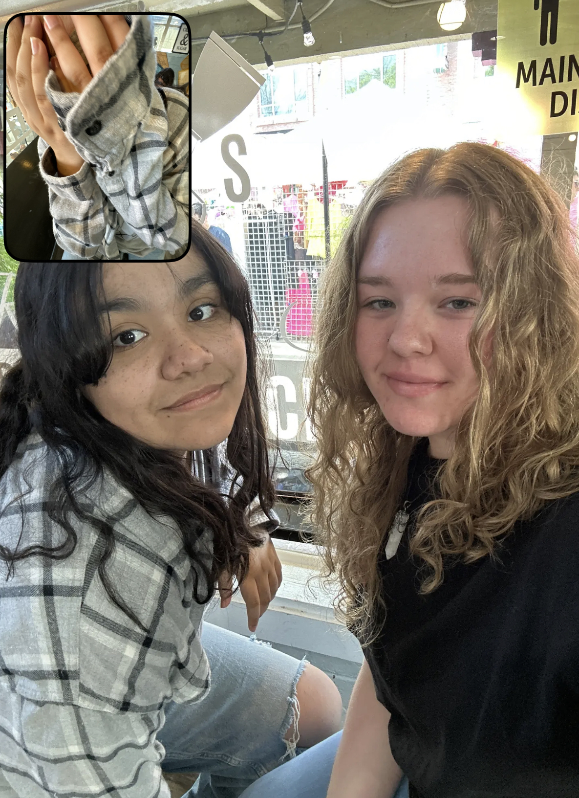
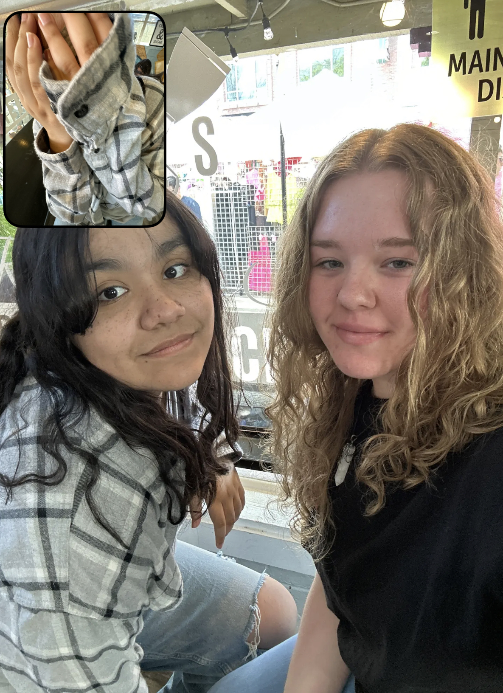

Home
My friends have always been an important part of who I am. Meeting new people every year used to be
nerve-racking but especially over the past year. Getting to make new friends has been one of the most enjoyable
parts of my life.
My main group of friends are a group of people who have known each other since we were in elementary school.
Growing up together has been one of the things I am most grateful for. They make up who I am today.
My friends at CART also mean a lot to me. I really enjoy going to school and getting to spend time with them.
They are people who I am really glad I got to meet before graduating and I can't imagine not knowing them. They
helped me grow my skills in coding and I am grateful for them.
My family is also very important to me. They are the people I enjoy being with most and have given me a life that I couldn't thank them enough for. They are genuinly good people and I am lucky to have people like them in my life.
 
